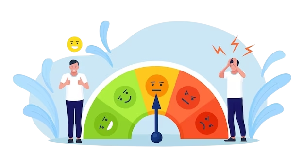
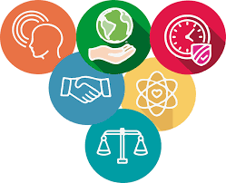

ESTRÉS CERO
¿Quiénes Somos?
Somos una empresa que busca ayudar a manejar el estrés en el entorno laboral con la finalidad buscar un mejor clima laboral dentro de la empresa, buscando las estrategias adecuadas detectando las necesidades del personal.
Sabemos la importancia de un clima laboral sano dentro de las instituciones por eso nos enfocamos en ayudar a manejar el estrés dentro de las áreas para así poder identificar la situaciones y problemas internos que esto está generando buscando soluciones que beneficien tanto al personal como a la productividad de la misma.
Misión
Detectar los niveles de estrés en las personas, en su entorno laboral con la finalidad de ayudarlos a mantener un clima laboral sano dentro de la institución donde desempeñan sus actividades cotidianas.
Visión
La mejora continua del clima laboral detectando el nivel de estrés de los trabajadores, lo que motiva esto y buscar alternativas para el mejoramiento y mayor aprovechamiento de sus habilidades.
Valores
- RESPETO: tomando las necesidades de nuestros clientes, hasta el análisis preciso de los datos arrojados por sus colaboradores.
- EMPATIA: buscando favorecer las relaciones interpersonales entre los miembros de la institución.
- PRESICION: en la recolección y análisis de datos con el fin de elaborar las estrategias adecuadas para la solución de los problemas.
- CALIDAD: realizando nuestras actividades con profesionalismo, entendiendo sus procesos para buscar la estabilidad de su talento humano.
- TRABAJO EN EQUIPO: buscamos formar equipos de trabajo que interactúen entre si de manera que puedan lograr los objetivos requeridos.